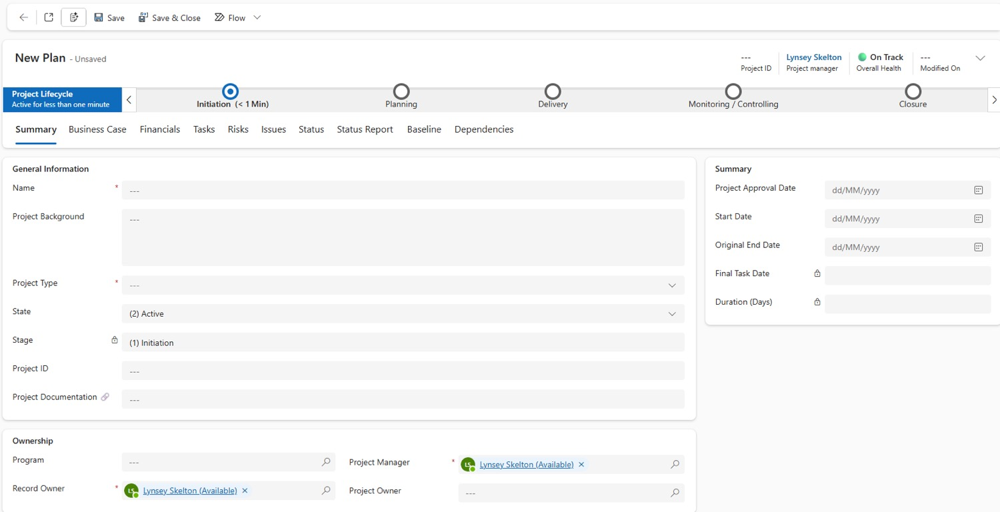
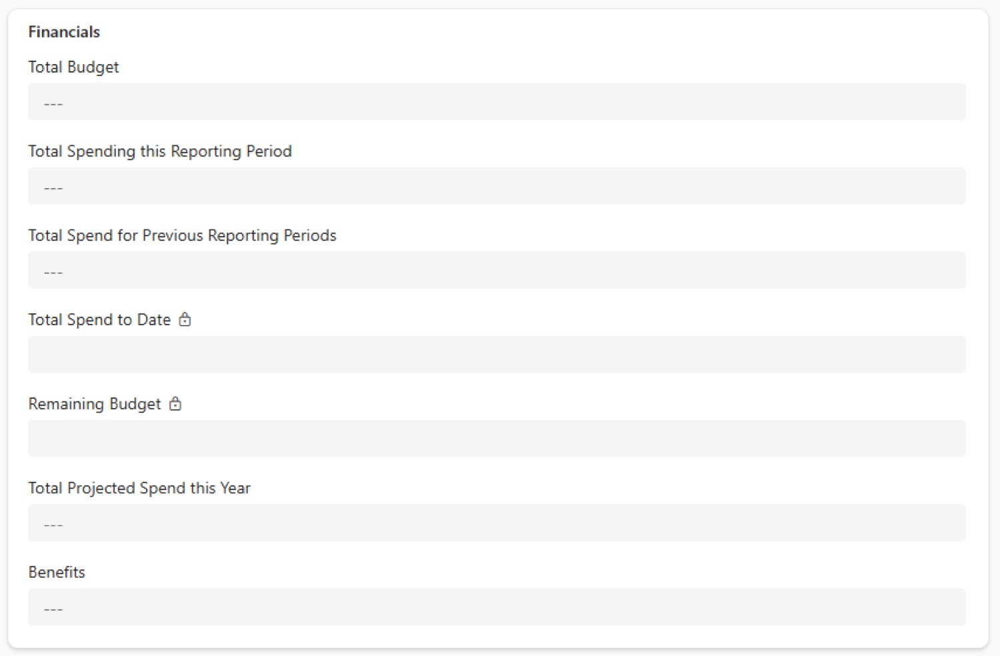

Set up
Create a project
A new plan is three tabs of information — Summary, Business Case and Financials — then one Save & Close. This page tells you what goes in every field, and which ones fill themselves in.
From blank plan to working project
Start from + New Plan on the home page. Only three tabs are open at first — the rest unlock once you've saved and closed.
You can't add tasks, risks or issues yetThose tabs stay locked while you're creating the plan. Save and close first, then reopen it from My Active Projects.
Already have a project?If your project already exists in Project Hub, find it under My Active Projects rather than creating a new one.
See the real screen — a brand-new plan on the Summary tab

Summary tab
The first tab you'll see. It has three sections to complete.
| Field | What to enter |
|---|---|
| General Information | |
| Name Required | The name of your project. |
| Project Background | From your Project Brief (or your old PWA record). This is the same field as on the Business Case tab — edit either, both change. |
| Project Type Required | Choose Project, Programme, Small Works or Department. |
| State Auto | Fills in as Active. Leave it. |
| Stage Locked | Taken from the Project Lifecycle bar and updates as you move stages. |
| Project ID Auto | Leave blank. The app gives the project an ID (e.g. PRJ-1044) once you save and close. |
| Project Documentation | Leave blank for now. Later you'll paste the link to your Teams documents here. How |
| Summary (dates) | |
| Project Approval Date | The date the project was approved at a Programme or Project Board. |
| Start Date | When the project starts. |
| Original End Date Optional | Your projected end date, if you have one. Locks once you reach Delivery — see why. |
| Final Task Date Auto | The latest date in your schedule, picked up once you start adding tasks. |
| Duration (Days) Auto | Working days from Start Date to Final Task Date (weekends excluded). |
| Ownership | |
| Program | The programme your project sits under. |
| Project Manager Auto | Fills in as you. You can change it. |
| Record Owner Required | Put your own name in to start with. Once you link a Teams group, that group becomes the owner. Teams site |
| Project Owner | The name of the project owner. |
How the dates relate to each other
Final Task Date and Duration follow your schedule, so they move as your tasks move. Original End Date is your baseline promise — it stays put.
Business Case tab
Where your project narrative lives. Two fields to update.
| Field | What to enter |
|---|---|
| Project Background | Already pulled through from the Summary tab. Change it here and it changes there too (and vice versa). |
| Scope Overview | The boundaries of the project — what's included and what's excluded. You can take this from your Project Brief. |
Financials tab Optional
New compared to PWA: financial data you enter here goes straight into the dashboards. If you don't have financial information, skip this tab.
What you type vs. what the app works out
Total Spend to Date stays blank until both spend fields have a figure in them.
| Field | What to enter |
|---|---|
| Total Budget | The total budget for the project. |
| Total Spending this Reporting Period | What's been spent during this reporting period. |
| Total Spend for Previous Reporting Periods | Spend from all previous reporting periods added together. |
| Total Spend to Date Locked | Calculated: this period + previous periods. |
| Remaining Budget Locked | Calculated: Total Budget − Total Spend to Date. |
| Total Projected Spend this Year | What you expect to spend this year. |
| Benefits | The cashable savings the project will make. You still need to update the Benefit Tracker as well. |
| Funding Available | Yes, No or Pending. |
| Funding Source | If there is funding, where the main source comes from. You can pick more than one:
ModernisationICT CapitalGeneral CapitalCity DealRevenueNew Bid PressureDepartmental |
See the real screen — the Financials tab

Save & Close
Once you've added everything, select Save & Close in the command bar.
1. You're taken home
Your new plan now shows in My Active Projects.
2. It gets an ID
The Project ID is allocated — note it, you'll use it to name risks and issues.
3. The rest unlocks
Reopen the plan and the remaining tabs — Tasks, Risks, Issues and more — are ready to use.
Next stepsShare permissions with your team, then link your Teams site. Sharing, Teams & documents